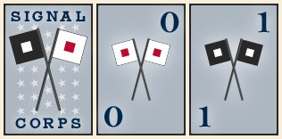
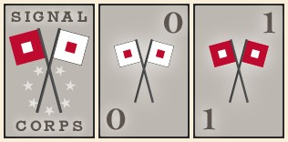

VI. Putting It Together
With the Field Command and Staff Command Phases covered (the second and third phases, respectively), I want to review the remaining phases of a game turn and finally summarize the complete turn sequence in Baptism at Bull Run.
The first phase of a game turn in Baptism at Bull Run is the Preparation Phase. The phase is divided into three sub-phases (which are resolved in the following order):
- Shuffle Units
- Limber Artillery
- Play Command Cards
I will cover each of these (but in reverse order).
For Baptism at Bull Run, I envisioned a command system in which the number of commands available during a turn was not fixed in number. With such a system players wouldn't be able to "game the system", since they wouldn't know precisely how many commands their opponents would have available during their next turn. I did not, however, want a system in which the number of commands varied wildly (from turn-to-turn) or in which the number of commands was randomly determined (for example, by rolling dice). Command cards were the obvious solution. By having only a limited number of command cards per player (i.e., 6 cards) each player would have some options available, but at the same time not know exactly what to expect from one turn to the next.
During the Play Command Cards sub-phase, players set (via card play) the number of commands (4, 5, or 6) they have available for their entire turn, i.e., for both their Field Command and Staff Command Phases.
The command card system works as follows: Each player has a base of four (4) commands available per turn. To this, a player adds the values of two command cards played during a turn, each card having a value of either zero ("0") or one ("1"). Thus, a player may either have four (4+0+0), five (4+1+0), or six (4+1+1) commands during a turn. Since each player only has a total of 6 command cards (three 0's & three 1's) and plays 2 each turn, they will completely cycle through their command card deck every third turn. Thus, all players will have 15 commands over the course of 3 game turns, which will be available as either: sets of 5-5-5 or 4-5-6 commands (or any permutation of the latter set). This means that no player gets 'short-changed' in the number of commands they receive during a game, but at the same time, neither player knows exactly how many commands the other player will have available when a draw deck is shuffled (or re-shuffled).
Examples of Union and Confederate command cards follow (back [left] and fronts: 0 & 1 [center and right, respectively]):
|  |  |
| Union command cards | Confederate command cards |
The Limber Artillery sub-phase allows a player to cancel ranging that any of their artillery units is currently performing. (More on artillery ranging shortly.)
Finally, the Preparation Phase begins with the Shuffle Units sub-phase. In Baptism at Bull Run, I wanted players to be able to conceal (and then, randomize) their units, but not be able to do so for all units. Units may not be shuffled if they are currently securing an approach adjacent to an enemy-occupied locale. Additionally, neither ranging artillery nor disrupted infantry units may be shuffled. (You'll note that cancelling artillery ranging [limbering] occurs after shuffling in the phase, so that newly limbered artillery units can only be shuffled during a later turn.) Finally, in order to prevent the game from devolving into a full-blown game of Memory®, neither solitary units nor units sharing the same type & strength (and position) may be shuffled. (For example, two 3-strength infantry units in the same position may not be shuffled.)
The fourth (and final) phase of a game turn in Baptism at Bull Run is the Administration Phase, which is divided into the following five sub-phases and are resolved in this order:
- Claim Captured Objectives
- Stand Down Units
- Spike Artillery
- Range Artillery
- Draw Command Cards & Cleanup
Players claim capture of an objective locale when they have at least one 2- or 3-strength infantry unit occupying an objective locale. When captured, an objective provides an immediate (and recurring) negative effect on the opposing army's morale. Thus, capturing and holding an objective locale for more than a turn or two will most likely end the game. (Morale effects will be covered in the next design diary entry.)
Units stand down—that is, move back into reserve from securing an approach—when no enemy units occupy the adjacent locale. Although not a 'sexy' step—like claiming captured objectives, for example—it is quite necessary to prevent units from securing approaches indefinitely when unopposed by enemy units.
Spiking artillery allows players to eliminate their own artillery units (surely a painful decision in-and-of-itself) that are under threat of being eliminated by enemy units. In Baptism at Bull Run when an artillery unit is eliminated due to the actions of the opposing player, the opposing player earns a morale bonus. However, spiking your own artillery deprives your opponent of this bonus. (Again, morale effects will be covered in the next design diary entry.)
Range artillery is the sub-phase during which a player's artillery units are revealed and is a prerequisite to bombarding. (That is, only artillery units that are ranging may bombard during the Field Command Phase.) As indicated earlier, limbering artillery is process by which ranging is cancelled. Thus for reasons of action sequencing, the limbering artillery step occurs before the Field Command Phase, while the artillery ranging step occurs after the Field Command Phase. In effect, an artillery unit may only bombard every other turn.
Ranging also has a secondary purpose in the game. By ranging artillery units, players may also perform "counter battery fire" upon their opponent. In game terms, artillery units may only bombard if they outnumber the ranging artillery opposite their current position. Thus, if both the Union and Confederate players each have 1 ranging artillery unit opposite each other at a particular approach, then neither player's artillery may bombard; they are in effect cancelling each other's ability to bombard. On the other hand, if the Confederate player has 2 artillery units ranging at an approach and the Union player only has 1 artillery unit ranging in the opposite approach, then the Confederate player may bombard with 1 artillery unit. Counter battery fire was added to the game, because during playtesting it was found that bombarding artillery caused an inordinately high amount of damage.
During the Draw Command Cards & Cleanup sub-phase, players draw new command cards to fill their hands. (Additionally, if no command cards remain in the draw deck—after each third turn—then the played/discarded command cards are re-shuffled before cards are drawn.) Finally, any temporary markers used during the turn are removed (or cleaned up) from the board.
Having now previewed all of the phases of the game, I wanted to review the sequence of phases in a complete game turn:
- Preparation Phase
- Shuffle Units
- Limber Artillery
- Play Command Cards
- Field Command Phase
- Advance
- Assault
- Bombard
- Charge
- Maneuver
- March
- Staff Command Phase
- Reorganize
- Rally
- Mobilize
- Administration Phase
- Claim Captured Objectives
- Stand Down Units
- Spike Artillery
- Range Artillery
- Draw Command Cards & Cleanup
The next design diary entry will review all of the morale effects in the game.
Released: 2008-06-24 10:30 EDT.
For questions and/or feedback, please send e-mail to: baptismatbullrun@....com (Click the hyperlink to reveal the e-mail address.)
Further discussion about Baptism at Bull Run can be found at either of these game hobbyist websites: BoardGameGeek ConsimWorld